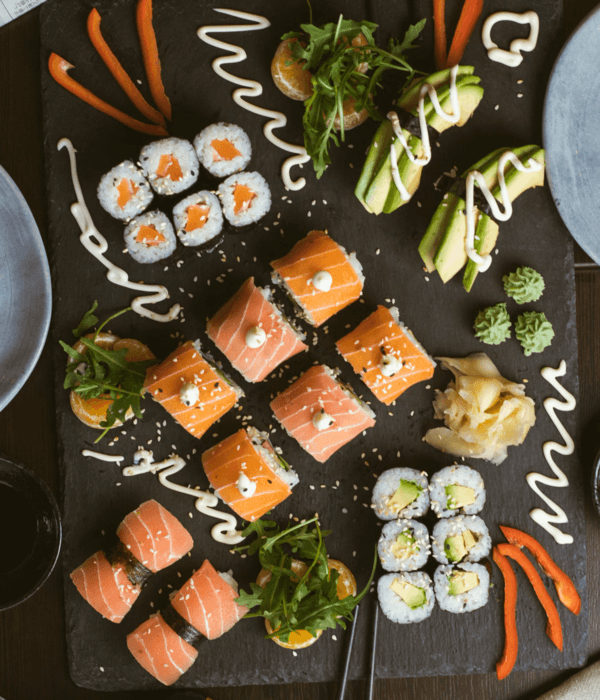
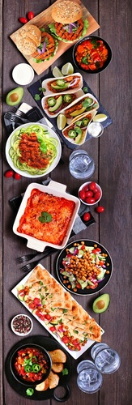
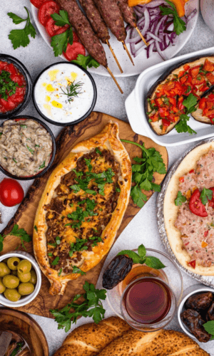
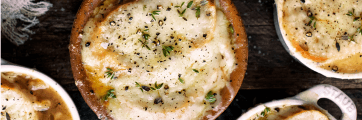
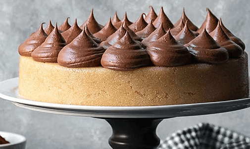

Way More Than Delicious
11 Reasons Foodies Should Be Flocking to Toronto, Walk along a main street of a booming Toronto neighborhood and you’re almost guaranteed to get hungry
—Claudia McNeilly,Vogue
An All-around Feast




